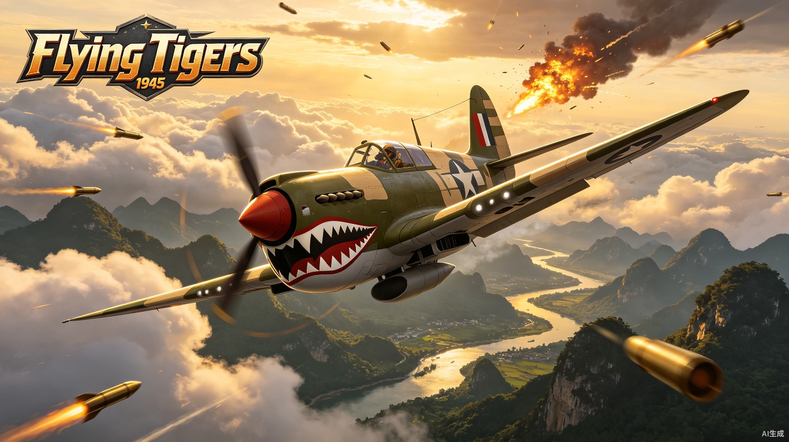
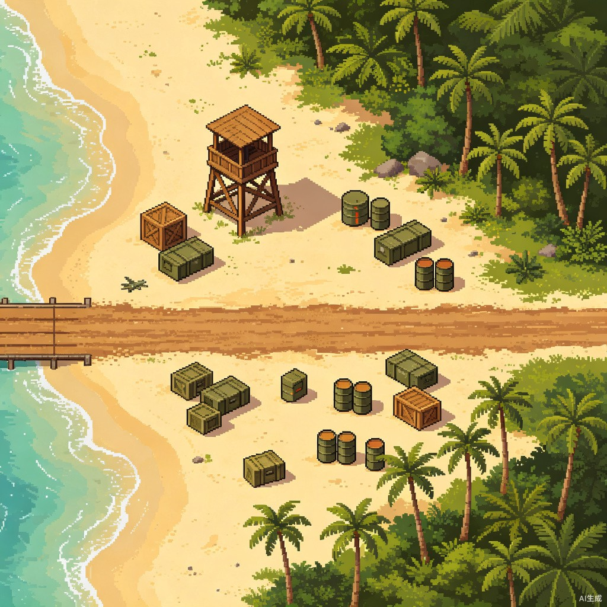

飞虎队1945 — 游戏设计文档
Flying Tigers: Skies of China · 纵向卷轴射击游戏 GDD
第1章飞虎队历史脉络与主要战果
1.1 成立背景
1941年8月1日，蒋介石签署第5987号命令，正式成立"中国空军美国志愿援华航空队"（American Volunteer Group，简称 AVG），总部设在昆明。[1]
克莱尔·李·陈纳德（Claire Lee Chennault）为创建者和指挥官，被任命为上校衔大队长。他自1937年起受国民政府聘为航空委员会顾问，1940年底赴美斡旋，终获罗斯福总统授权，以非官方渠道秘密组建志愿航空队。[2]
首批人员约 311人，包括110名飞行员、150名机械师和约50名后勤人员。陈纳德回忆录坦承，组建之初仅约十余人能胜任P-40战斗机驾驶，多数人此前只飞过轰炸机或运输机，年龄多在25岁以上（最大43岁，最小21岁）。[3]
AVG 下辖三个驱逐中队，各具特色：
- 第1中队 "亚当与夏娃"（Adam and Eves）
- 第2中队 "熊猫"（Panda Bears）
- 第3中队 "地狱天使"（Hell's Angels）
1.2 标志性战机：P-40B/C 战斧
国民政府耗资约 450万美元，从英国订单中截获100架原本拟运往北非的寇蒂斯"战斧"（Tomahawk）Mk.II，即美军P-40B/C。[4]
| 参数 | P-40B/C 战斧 |
|---|---|
| 机长 | 9.66 米 |
| 翼展 | 11.37 米 |
| 发动机 | 艾利森V-1710 液冷直列式（1050马力） |
| 最大速度 | 555~574 公里/小时 |
| 实用升限 | 8840~9982 米 |
| 火力 | 机鼻2挺12.7mm + 机翼4挺7.62mm机枪 |
| 优点 | 机体坚固、俯冲速度快、火力密集 |
| 缺点 | 高空性能差、爬升率弱、不宜水平盘旋格斗 |
鲨鱼嘴涂装：机头绘有醒目的鲨鱼嘴和眼睛图案，仿效英国皇家空军第112中队在北非战场的做法。1942年初由迪士尼公司漫画家罗伊·威廉姆斯设计队徽——"一只带有飞翼的老虎从代表胜利的V字中扑出"。中国民众初见鲨鱼嘴图案，认为像"会飞的老虎"，"飞虎队"之名由此得名。[5]
1.3 主要战役与战果
昆明首战（1941年12月20日）
珍珠港事件后第13天，日军陆航独立第21中队10架川崎99式双发轻型轰炸机从越南河内起飞空袭昆明。飞虎队"亚当与夏娃"和"熊猫"中队升空拦截，日军飞行员首次见到绘有鲨鱼嘴的P-40迎面冲来，士气大挫。[6]
战果：当场击落3架；其余7架全部重伤，仅1架勉强返回河内。美军以 9:0 完胜。昆明市区此后长达约一年未遭日军轰炸，极大鼓舞了中国军民士气。
仰光保卫战（1941年12月—1942年3月）
第3中队"地狱天使"驻守缅甸仰光，协同英国皇家空军作战。在约11天的仰光空战中，飞虎队宣称击落敌机75架，自身损失约6架飞机、牺牲2名飞行员。1942年3月8日，仰光最终失守。[7]
怒江阻击战（1942年5月）
中国远征军第一次入缅失利后，日军第56师团兵临怒江惠通桥西岸。1942年5月6日，陈纳德急电请求批准空袭。飞虎队出动约8架P-40从云南驿机场起飞，轰炸日军后方基地腊戌、畹町，炸毁大量坦克、汽车及渡江浮桥，成功将日军阻止于怒江西岸，保卫了云南和陪都重庆的安全。[8]
1.4 战果统计与王牌飞行员
飞虎队实际作战时间约7个月（1941年12月—1942年7月），执行约102次任务，包括26次空战、23次对地攻击。
| 统计口径 | 击落/摧毁日机 | 自身损失 | 人员伤亡 |
|---|---|---|---|
| 战时宣称 | 299架（+153架击伤） | 空战12架，地面61架 | 26人阵亡/失踪/被俘 |
| 战后学术修正 | 约115~120架 | 约68架（含各种损失） | 约23人阵亡/失踪/被俘 |
| 王牌飞行员 | 共约19位王牌（击落5架以上），头号王牌罗伯特·尼尔13架 | ||
1.5 解散与后续：第14航空队
1942年7月4日（美国独立日）午夜，AVG正式解散。剩余飞机和少数人员被编入美国陆军第10航空队第23战斗机大队，仍由陈纳德指挥。[9]
1943年3月10日，扩编为 美国陆军第14航空队（14th Air Force），陈纳德升任少将司令。此后又组建中美空军混合团（CACW），由中国空军飞行员驾驶美制战机作战。
1.6 驼峰航线
1942年4月正式开通，1945年11月30日结束，持续约3年零8个月。航线西起印度阿萨姆邦汀江，东至中国昆明，全长约800公里，需跨越喜马拉雅山脉、高黎贡山脉、横断山脉，山峰海拔多在4500~5500米。[10]
3年多时间里共空运到中国 80多万吨 战略物资，援华物资的81%通过该航线运入。美军损失飞机563架（一说1500架以上），牺牲人员近3000人；中国航空公司损失飞机48架，牺牲飞行员168人。
1.7 杜立特空袭与轰炸日本
1942年4月18日，杜立特率领16架B-25从"大黄蜂"号航母起飞空袭东京、横滨、名古屋、神户、横须贺。因燃油不足，15架在中国浙江、安徽、福建、江西境内坠毁或迫降，64名美军飞行员被中国军民奋力营救。日军为此对中国东南沿海展开疯狂报复，导致约 25万 中国军民遭杀害。[11]
马特霍恩计划（1944年6月—1945年3月）：B-29从成都新津、邛崃、彭山、广汉四大机场起飞轰炸日本九州。四川百姓动用约50万民工修建机场。1944年6月15日，75架B-29首次轰炸九州八幡制铁所，47架飞抵目标上空，投下约200吨炸弹。[12]
1.8 芷江空战与衡阳、桂林保卫战
芷江空战（1945年4月—6月）：抗日战争正面战场最后一次大规模空战。飞虎队与中国空军并肩作战，累计出动战斗机2500余架次、轰炸机183架次，日军遗骸约1.6万余具。[13]
衡阳保卫战（1944年6月23日—8月8日）：国军第十军方先觉部孤军坚守47天。飞虎队B-25向衡阳守军空投食物、弹药和医疗物资。[14]
桂林保卫战（1944年）：飞虎队在桂林秧塘机场驻有第23战斗机大队第74中队、第308轰炸机中队，飞机最多时达200架。[15]
第2章游戏核心设计
2.1 主题定位
游戏以 飞虎队（AVG）及美国陆军第14航空队 协助中国抗日的真实历史为背景，玩家驾驶标志性的P-40"战斧"战斗机（鲨鱼嘴涂装），在1941年至1945年的中国及太平洋战场上空与日军作战。
叙事上将真实历史事件融入关卡流程，每一关都对应一场经典战役或历史场景，通过开场简报和关卡内的历史注释传递历史知识。
2.2 画面风格：矢量写实（照抄 iFighter 1945）
- 视角：俯视角纵向卷轴（Top-Down Vertical Scrolling），战机以俯视角度呈现，机头朝上
- 风格：2D矢量写实，高对比度、清晰锐利的线条和块面，金属质感强烈
- 色调： earthy brown（泥土褐）+ olive drab（橄榄绿）+ sky grey（天空灰），低饱和度做旧感
- 特效：粒子爆炸、弹道光效突出可读性，海面/云层流动效果
- UI：复古军绿色调、做旧胶片质感、战机仪表盘元素

2.3 核心机制
机制保持简单，不搞体力值、签名、武器合成、装备升级等复杂系统。核心只有：
基础操作
- WASD / 虚拟摇杆：移动
- Space / Z：普通射击（连发）
- X / Shift：释放炸弹
特殊操作
- 蓄力攻击：长按射击键1~2秒，松开后释放强力技能
- 蓄力期间战机进入"准备姿态"，机身微颤、引擎声变化
- 不同战机蓄力效果不同（参考1945突击者）
2.4 可选战机（4架）
| 战机 | 国籍 | 射击类型 | 蓄力效果 | 炸弹效果 |
|---|---|---|---|---|
| P-40 战斧 | 美国（飞虎队） | 集中型 | 鲨鱼突击（僚机前冲） | 俯冲轰炸编队 |
| P-51 野马 | 美国 | 扩散型 | 盾牌阵型（可挡弹） | B-29地毯轰炸 |
| P-38 闪电 | 美国 | 集中型 | 平行阵型 | 凝固汽油弹 |
| B-25 米切尔 | 美国 | 广角散射 | 全向机枪扫射 | 高空重磅炸弹 |
2.5 Power-Up 系统（简化版1945）
- P 道具（蓝色）：火力升级 +1，最高4级。满级后拾取每个加4000分
- B 道具（橙色）：炸弹 +1，最多6颗
- 医疗包（红色十字）：恢复1点生命（碰撞后使用）
- 金砖：200~2000分动态波动（闪光频率计分，参考1945）
2.6 难度系统：简单 / 困难 二周目
| 维度 | 简单模式（一周目） | 困难模式（二周目） |
|---|---|---|
| 敌机HP | 标准值 | x1.5 |
| 弹幕密度 | 标准 | x1.8，弹速更快 |
| 敌机数量 | 标准 | x1.3 |
| BOSS攻击频率 | 标准 | x1.4，阶段转换更快 |
| 玩家初始生命 | 3条 | 2条 |
| 得分倍率 | x1 | x2 |
| 隐藏关卡 | 部分可触发 | 全部可触发，新增隐藏BOSS |
2.7 评分与排名
- 主线高分榜：按总得分排名（全球/好友）
- 隐藏关高分榜：单独排名，显示通关时间和残机数
- 深渊模式排行榜：以"到达层数"和"总得分"双重排名
- 每关结算：根据击杀数、通关时间、道具拾取率评 S/A/B/C 级
第3章主线关卡设计（12关）
12个主线关卡按时间顺序排列，从1941年飞虎队成立到1945年抗战胜利，每关对应一个真实历史场景。
背景：珍珠港事件后第13天，日军10架川崎99式轰炸机从越南河内起飞空袭昆明。飞虎队首次出战。
场景：昆明城市上空，可见滇池、西山、城市街道。背景色调为温暖的云南高原黄绿色。
敌人：日军川崎99式双发轻型轰炸机（无护航，缓慢直线飞行，少量投弹）、97式战斗机（少量护航）。
BOSS："九七重爆"编队领队机 — 大型双发轰炸机，缓慢向前飞行，两侧机腹投下炸弹，机枪塔间歇射击。HP: 80。
隐藏任务：击落所有轰炸机且不损失任何友军地面建筑，解锁 P-40 鲨鱼嘴涂装变体。
背景：飞虎队第3中队"地狱天使"协同英军保卫仰光港口，面对日军大规模空袭。
场景：缅甸仰光港口及海岸线，可见码头、货轮、棕榈树、佛塔。背景色调为热带橙红夕阳。
敌人：一式战斗机"隼"（高速灵活，会翻滚躲避）、97式重轰炸机编队、九九式舰爆（俯冲投弹）。
BOSS："妙高"号重型巡洋舰（架空） — 海面上缓缓航行的巨型战舰，主炮塔齐射弹幕、副炮高射炮火、舰载机起飞支援。二阶段：舰桥升起变形为机械炮台，射速暴增。HP: 150/200。
随机事件：第2波敌人中，有20%概率出现 震电（J7W）原型机 作为隐藏小BOSS中途拦截（困难模式必出）。
背景：远征军入缅失利，日军兵临怒江西岸。飞虎队出动8架P-40轰炸日军运输队和渡江设备。
场景：怒江大峡谷，深绿色的江水、陡峭峡谷、惠通桥吊桥、山间公路。色调暗沉紧张。
敌人：日军卡车运输队（地面移动目标）、轻型坦克（九五式）、浮桥搭建船、97式战斗机护航。
BOSS："筑波"浮桥要塞 — 江面上的浮动平台，搭载高射炮塔和机枪阵地。二阶段：浮桥解体，中央升起巨型防空炮台。HP: 180/220。
特殊机制：大量地面目标需要俯冲扫射，考验玩家对地攻击能力。击毁全部卡车运输队可解锁 "怒江卫士"勋章。
背景：驼峰航线，世界航空史上最艰险的运输线。玩家护航C-47运输机穿越喜马拉雅。
场景：白雪皑皑的喜马拉雅山脉、深邃峡谷、云雾缭绕、冰川河流。色调冷蓝白，伴随暴风雪粒子效果。屏幕会有风雪干扰（随机遮挡视线）。
敌人：日军一式战斗机"隼"（利用云层伏击）、二式单座战斗机（高空性能优秀）、高射炮阵地（隐藏在雪山山谷中）。
BOSS："富士"高空拦截基地 — 隐藏在雪山中的日军秘密机场，从机库中连续释放战斗机，山顶高射炮密集射击。二阶段：山体滑开，露出巨型轨道炮。HP: 200/280。
特殊机制：需要保护3架C-47运输机，任何一架被击落都会降低最终评分。暴风雪会周期性降低能见度。
背景：豫湘桂会战期间，日军大举进攻广西。飞虎队在桂林秧塘机场驻有200架战机，与日军展开惨烈空战。
场景：桂林标志性的喀斯特峰林、漓江、秧塘机场跑道、机库、散落的战机残骸。黄昏时分的金色光线。
敌人：一式战斗机"隼"编队、二式复座战斗机"屠龙"（重型对地攻击机）、自杀式"樱花"特攻机（高速直冲）。
BOSS："桂林"巨型飞行炮台 — 日军秘密研制的超大型飞行要塞，下方悬挂多座炮塔和炸弹舱。二阶段：底部装甲脱落，露出核心反应堆，射出密集激光状弹幕。HP: 250/320。
随机事件：关卡中段，一架友军P-40被击落，飞行员跳伞，玩家需要在10秒内击落追击的敌机保护友军飞行员。
背景：方先觉第十军孤军坚守衡阳47天。飞虎队B-25向守军空投物资，玩家负责护航。
场景：被轰炸后的衡阳城市废墟，残垣断壁、燃烧的街道、湘江水面映着火光。夜间关卡，探照灯扫射、火光照明。
敌人：夜间战斗机（利用黑暗伏击）、高射炮探照灯组合、九九式双发轻爆（夜间轰炸机）。
BOSS："衡阳"移动攻城要塞 — 巨型履带式陆上要塞，搭载大口径加农炮和防空弹幕，在城市废墟中缓缓推进。二阶段：顶部装甲打开，发射V型弹幕群。HP: 280/350。
特殊机制：每过一段时间，友军B-25会从画面上方飞过投放补给箱（加生命/P道具），玩家需要保护B-25不被击落。
背景：马特霍恩计划，B-29超级堡垒从成都四大机场起飞轰炸日本。玩家为B-29编队护航。
场景：四川盆地农田、成都平原、新建的大型轰炸机机场（新津/邛崃/彭山/广汉）、远处青城山轮廓。黎明微光。
敌人：日军高空拦截机（专为拦截B-29设计）、地对空导弹原型（火箭弹）、高射炮阵。
BOSS："震电"局地战斗机（历史首次实战化登场） — 日本末日战机震电（J7W），鸭式前掠翼布局，极高速度和机动性。一阶段：高速穿插，释放扇形散射弹幕；二阶段：引擎过载，全身发红，弹幕密度翻倍，释放追踪导弹。HP: 300/380。
隐藏任务：B-29编队全部安全飞出屏幕，解锁 "超级堡垒守护者"成就。
背景：湘西会战，芷江机场。抗日战争正面战场最后一次大规模空战。飞虎队出动2500余架次。
场景：芷江机场及周边丘陵、农田、村庄。雷暴天气，闪电间歇照亮战场，雨水顺着屏幕流下。
敌人：日军所有机型混合编队（一式、二式、三式、四式战斗机），数量极多，弹幕密度达到一周目峰值。
BOSS："零式改"终极拦截机 + "神州"飞行母舰 — 双BOSS战。零式改为高速近战型，飞行母舰为弹幕覆盖型。母舰二阶段：装甲脱落，露出内部机械核心，释放全屏环形弹幕。HP: 350/420（母舰）+ 200（零式改）。
背景：战争进入尾声，日军残余航母编队在东海活动，试图阻挠盟军登陆准备。
场景：广阔的太平洋海面，航空母舰甲板、护航驱逐舰、舰载机起降、远处的海岛。
敌人：零式战斗机（从航母弹射起飞）、彗星式舰爆（俯冲轰炸）、天山式舰攻（鱼雷攻击）。
BOSS："信浓"级改装航母 — 巨型航母甲板，弹射大量舰载机，防空炮密集。二阶段：甲板滑开，露出隐藏的双重弹射器和巨型弹射炮，发射巨型炮弹。HP: 380/450。
背景：B-29火攻东京，玩家护航轰炸机编队穿越日军本土防空网。
场景：日本城市上空，下方是熊熊燃烧的城市（参考东京大轰炸），火光映红夜空，高射炮弹幕密集如网。
敌人：三式战斗机"飞燕"、四式战斗机"疾风"、高射炮"九八式"密集阵、火箭拦截弹"橘花"。
BOSS："富士"防空指挥中心 — 隐藏在城市地下的巨型防空设施，顶部升起多座高射炮塔和导弹发射井。二阶段：地面裂开，巨型轨道防空炮升起，发射超高速不可擦弹。HP: 400/500。
背景：长崎原子弹投下前，日军集结所有残余空中力量进行最后拦截。
场景：长崎城市及港口，远处可见三菱重工业工厂。天空被战火染成血红，乌云翻滚。
敌人：所有日军战机型号大杂烩，包括从未实战过的试验机型（震电编队、秋水火箭机）。
BOSS："八纮"超巨型飞行战舰 — 日本秘密研制的超大型飞行战舰，体型占据屏幕1/3，搭载数十座炮塔。三阶段变形：一阶段常规炮击；二阶段核心装甲展开，释放全屏散射+追踪弹幕；三阶段核心暴露，释放终极激光扫射。HP: 450/600/750。
背景：日本宣布无条件投降。玩家驾驶P-40在晴朗的中国上空做最后的胜利飞行。
场景：晴朗蓝天、白云、中国田野和村庄、庆祝的人群（地面可见挥舞旗帜的小人）。
特殊设计：本关无敌人，无BOSS。玩家自由飞行，收集空中飘落的庆祝彩带（加分）。背景播放舒缓的胜利音乐。关卡末尾，P-40缓缓降落在昆明巫家坝机场，出现"抗战胜利"字幕和真实历史照片。
解锁：通关后解锁困难模式、全部隐藏关卡入口、深渊模式。
第4章隐藏关卡设计（4关）
隐藏关卡需要满足特定条件才能解锁，难度极高，面向核心玩家挑战。
第5章无限深渊模式
5.1 设计概念
参考《原神》深渊的层数爬塔概念，但简化为纯STG玩法。玩家需要在越来越难的关卡中尽可能深入，全球/好友排行榜以"到达层数"和"总得分"双重排名。
5.2 模式规则
- 初始状态：3条命，2颗炸弹，火力等级1
- 每3层为一个"战区"，更换场景主题（循环使用12关的场景素材）
- 每5层出现一个BOSS（随机抽取主线BOSS，属性按层数递增）
- 每层时长约60~90秒，击败所有敌人后自动进入下一层
- 层数越高，敌人越强：HP和弹速按层数线性增长
- 层数奖励：每通过5层，奖励1条命或1颗炸弹（二选一）
5.3 难度增长曲线
| 层数区间 | 敌人HP倍率 | 弹幕密度 | 弹速倍率 | 特色 |
|---|---|---|---|---|
| 1~10 | x1.0 | 标准 | x1.0 | 教学适应期 |
| 11~25 | x1.3 | x1.3 | x1.1 | 开始出现混合编队 |
| 26~50 | x1.8 | x1.6 | x1.3 | BOSS加入二阶段变形 |
| 51~80 | x2.5 | x2.0 | x1.5 | 出现双BOSS战 |
| 81~100 | x3.5 | x2.5 | x1.8 | 隐藏BOSS（震电）概率出现 |
| 100+ | x4.0+（每层+0.02） | x3.0 | x2.0 | 极限生存挑战 |
5.4 排行榜设计
- 全球榜：到达层数 → 同层数以总得分排名
- 好友榜：同上，但限定好友范围
- 周常挑战：每周一个特殊规则（如"仅限P-40"、"无炸弹挑战"），单独排名
- 称号系统：
- 到达10层："新手飞行员"
- 到达25层："驼峰老兵"
- 到达50层："飞虎王牌"
- 到达100层："天空传奇"
- 到达150层："不死的飞虎"
第6章数值体系设计
6.1 玩家数值
| 属性 | 基础值 | 简单模式 | 困难模式 | 备注 |
|---|---|---|---|---|
| 初始生命 | 3条 | 3条 | 2条 | 残机数，为0时游戏结束 |
| 初始炸弹 | 2颗 | 2颗 | 1颗 | 最多持有6颗 |
| 移动速度 | 200 px/s | 200 | 200 | 所有战机统一 |
| 射击冷却 | 0.12s | 0.12s | 0.12s | 连发间隔 |
| 子弹伤害 | 1 | 1 | 1 | 每发子弹 |
| 蓄力时间 | 1.5s | 1.5s | 2.0s | 困难模式蓄力更久 |
| 蓄力伤害 | 5~20 | 基础 | x1.2 | 随Power等级变化 |
| 碰撞判定 | 机身中心4px | 4px | 3px | 困难判定更小（更难） |
| 无敌时间 | 2.0s | 2.5s | 1.5s | 被击中后的闪烁无敌 |
6.2 火力等级（Power Level）
| 等级 | 弹幕形态 | 僚机数 | 蓄力效果 |
|---|---|---|---|
| LV.1 | 单发直射 | 0 | 不可用（无僚机） |
| LV.2 | 双发平行 | 2 | 僚机前冲，伤害x2 |
| LV.3 | 三发散射（窄角） | 2 | 僚机扇形散射，伤害x3 |
| LV.4 | 四发 + 追踪导弹 | 4 | 僚机全向攻击，伤害x5 |
6.3 敌机数值体系
| 敌机类型 | HP | 速度 | 得分 | 掉落 |
|---|---|---|---|---|
| 97式战斗机 | 2 | 150 | 100 | — |
| 一式战斗机"隼" | 3 | 200 | 200 | — |
| 零式战斗机 | 4 | 220 | 300 | 20% P道具 |
| 99式舰爆 | 5 | 180 | 400 | 30% P道具 |
| 97式重爆 | 8 | 100 | 500 | 50% B道具 |
| 二式复座"屠龙" | 10 | 120 | 600 | 50% P道具 |
| 自杀式"樱花" | 1 | 350 | 1000 | — |
| 三式"飞燕" | 6 | 250 | 500 | 30% B道具 |
| 四式"疾风" | 8 | 280 | 700 | 40% P道具 |
| 震电（隐藏） | 50 | 300 | 5000 | 100% P+B |
6.4 BOSS数值模板
| BOSS类型 | 一阶段HP | 二阶段HP | 三阶段HP | 攻击间隔 | 得分 |
|---|---|---|---|---|---|
| 教学关BOSS | 80 | — | — | 1.5s | 5000 |
| 小型BOSS | 150 | 200 | — | 1.2s | 10000 |
| 中型BOSS | 200 | 280 | — | 1.0s | 15000 |
| 大型BOSS | 250 | 320 | — | 0.8s | 20000 |
| 巨型BOSS | 300 | 380 | 450 | 0.6s | 30000 |
| 终章BOSS | 350 | 420 | 500 | 0.5s | 50000 |
| 隐藏BOSS（震电） | 400 | 500 | 600 | 0.4s | 100000 |
6.5 分数系统
| 来源 | 分值 | 备注 |
|---|---|---|
| 击毁敌机 | 100~1000 | 依敌机类型 |
| BOSS击破 | 5000~50000 | 依BOSS规模 |
| 金砖（最低） | 200 | 闪光最暗时拾取 |
| 金砖（最高） | 2000 | 闪光最亮时拾取 |
| P道具（满级后） | 4000 | Power已达LV.4 |
| B道具（满级后） | 10000 | 炸弹已达6颗 |
| 无伤通关奖励 | +50% | 整关不损失生命 |
| 快速通关奖励 | +30% | 低于标准时间 |
| 全杀奖励 | +20% | 击毁所有敌人 |
6.6 关卡评价标准
| 评价 | 条件 | 奖励 |
|---|---|---|
| S | 无伤 + 全杀 + 快速 | 解锁该关困难模式、额外生命+1 |
| A | 满足其中两项 | 额外炸弹+1 |
| B | 满足其中一项 | 标准奖励 |
| C | 仅通关 | 基础奖励 |
第7章Godot 4.7 技术架构
7.1 项目结构
res://flying_tigers_1945/
├── autoload/ # 自动加载单例
│ ├── GameManager.gd # 游戏状态管理（分数、生命、关卡进度）
│ ├── AudioManager.gd # 音效与BGM管理
│ ├── SpawnManager.gd # 敌人生成与波次控制
│ └── SaveManager.gd # 存档与排行榜
├── scenes/
│ ├── player/
│ │ ├── player_p40.tscn
│ │ ├── player_p51.tscn
│ │ ├── player_p38.tscn
│ │ └── player_b25.tscn
│ ├── enemies/
│ │ ├── enemy_base.gd # 敌机基类（继承用）
│ │ ├── enemy_fighter.tscn
│ │ ├── enemy_bomber.tscn
│ │ └── enemy_kamikaze.tscn
│ ├── bosses/
│ │ ├── boss_base.gd
│ │ ├── boss_cruiser.tscn
│ │ ├── boss_fortress.tscn
│ │ ├── boss_carrier.tscn
│ │ └── boss_shinden.tscn
│ ├── bullets/
│ │ ├── bullet_player.tscn
│ │ └── bullet_enemy.tscn
│ ├── powerups/
│ │ ├── powerup_p.tscn
│ │ ├── powerup_b.tscn
│ │ └── powerup_coin.tscn
│ ├── backgrounds/
│ │ ├── bg_scroller.gd # 无限滚动背景控制器
│ │ └── bg_parallax.tscn # 多层视差背景
│ ├── effects/
│ │ ├── explosion.tscn # GPUParticles2D 爆炸
│ │ ├── screen_flash.tscn
│ │ └── bomb_clear.tscn
│ └── ui/
│ ├── hud.tscn
│ ├── main_menu.tscn
│ ├── pause_menu.tscn
│ └── leaderboard.tscn
├── scripts/
│ ├── state_machine.gd # 有限状态机基类
│ ├── object_pool.gd # 对象池（子弹/敌机复用）
│ └── difficulty_curve.gd # 难度曲线计算
├── resources/
│ ├── audio/
│ ├── textures/
│ ├── fonts/
│ └── shaders/
└── levels/
├── level_01_kunming.tscn
├── level_02_rangoon.tscn
└── ... (共16个关卡场景)7.2 核心系统架构
玩家控制器（PlayerController）
extends CharacterBody2D
# 核心属性
var speed: float = 200.0
var lives: int = 3
var bombs: int = 2
var power_level: int = 1
var charge_time: float = 0.0
var is_invincible: bool = false
func _physics_process(delta: float) -> void:
# 移动输入
var input := Input.get_vector("move_left", "move_right", "move_up", "move_down")
velocity = input * speed
move_and_slide()
clamp_to_screen()
# 射击与蓄力
if Input.is_action_pressed("shoot"):
charge_time = minf(charge_time + delta, 2.0)
if shoot_timer <= 0:
fire_normal()
elif Input.is_action_just_released("shoot") and charge_time >= 1.5:
fire_charge_attack()
charge_time = 0.0
# 炸弹
if Input.is_action_just_pressed("bomb") and bombs > 0:
use_bomb()对象池系统（ObjectPool）
STG游戏的核心性能优化。避免频繁创建/销毁子弹和敌机，使用对象池复用实例。
class_name ObjectPool
extends Node
var pool: Dictionary = {} # { scene_path: [instances] }
var active: Dictionary = {}
func get_instance(scene: PackedScene) -> Node:
var path = scene.resource_path
if pool.has(path) and pool[path].size() > 0:
var obj = pool[path].pop_back()
obj.reset_state()
return obj
return scene.instantiate()
func return_instance(obj: Node, scene: PackedScene) -> void:
var path = scene.resource_path
if not pool.has(path):
pool[path] = []
obj.get_parent().remove_child(obj)
pool[path].append(obj)敌人状态机（EnemyStateMachine）
extends Node
class_name StateMachine
var current_state: State = null
var states: Dictionary = {}
func add_state(name: String, state: State) -> void:
states[name] = state
state.state_machine = self
func transition_to(state_name: String) -> void:
if current_state:
current_state.exit()
current_state = states[state_name]
current_state.enter()背景无限滚动系统
extends ParallaxBackground
var scroll_speed: float = 100.0
var bg_height: float = 2048.0
func _process(delta: float) -> void:
scroll_offset.y += scroll_speed * delta
if scroll_offset.y >= bg_height:
scroll_offset.y -= bg_height
# 多层视差：远景(0.2x) 中景(0.5x) 近景(0.8x) 地面(1.0x)7.3 碰撞层规划
| 层位 | 名称 | 包含对象 |
|---|---|---|
| Layer 1 | Player | 玩家战机 |
| Layer 2 | PlayerBullet | 玩家子弹 |
| Layer 3 | EnemyBullet | 敌人子弹 |
| Layer 4 | Enemy | 敌机、BOSS |
| Layer 5 | PowerUp | P道具、B道具、金砖 |
| Layer 6 | GroundTarget | 地面目标（坦克、卡车） |
| Layer 7 | Ally | 友军（运输机、B-25） |
| Layer 8 | Scenery | 场景碰撞（山峰、建筑） |
7.4 存档与排行榜
# SaveManager.gd — 使用 Godot 内置 ConfigFile
func save_progress() -> void:
var config = ConfigFile.new()
config.set_value("progress", "highest_stage", highest_stage)
config.set_value("progress", "total_score", total_score)
config.set_value("progress", "unlocked_planes", unlocked_planes)
config.save("user://save_data.cfg")
# 深渊模式排行榜（本地 + Steam Leaderboard API）
func submit_score(score: int, floor: int) -> void:
if Steam.is_init():
Steam.setLeaderboardScore("abyss_depth", floor, true)
Steam.setLeaderboardScore("abyss_score", score, true)7.5 性能优化要点
- 对象池：所有子弹、敌机、爆炸特效均使用对象池复用
- 视锥剔除：屏幕外200px以外的对象暂停_process和_physics_process
- 批量绘制：地面目标使用 TileMap + MultiMesh，减少Draw Call
- 纹理压缩：所有纹理使用 .webp 格式，减少内存50%+
- 音频流：BGM使用 AudioStreamOggVorbis，SFX使用 AudioStreamWAV（短音效）
- 粒子限制：GPUParticles2D 的 Amount 控制在50以内，大爆炸使用预渲染动画替代
- 多线程：敌人生成逻辑放入后台线程（Godot 4.x 支持 WorkerThreadPool）
第8章素材清单与设计思路
8.1 美术素材清单
玩家战机（4架）
| 战机 | 规格 | 设计要点 |
|---|---|---|
| P-40 战斧 | 128x128 px x 8方向 | 鲨鱼嘴涂装、橄榄绿+沙色、标志性的机头牙齿 |
| P-51 野马 | 128x128 px x 8方向 | 银色机身、气泡座舱、美式星条旗标志 |
| P-38 闪电 | 144x128 px x 8方向 | 双机身双尾翼、橄榄绿涂装、识别度高 |
| B-25 米切尔 | 160x144 px x 4方向 | 双发中型轰炸机、机腹炮塔、体型较大 |
敌人战机（10种 + 变体）
| 机型 | 规格 | 设计要点 |
|---|---|---|
| 97式战斗机 | 96x96 px | 固定起落架、绿色涂装、早期型特征 |
| 一式战斗机"隼" | 96x96 px | 可收起落架、流线型、浅绿迷彩 |
| 零式战斗机 | 96x96 px | 椭圆形机翼、无装甲轻量化、浅灰绿 |
| 99式舰爆 | 104x96 px | 固定起落架、减速板、深绿涂装 |
| 97式重爆 | 160x120 px | 双发大型、绿棕迷彩、多机枪塔 |
| 二式"屠龙" | 144x112 px | 双座重型、斜射炮、深绿涂装 |
| 自杀式"樱花" | 80x64 px | 火箭动力、无尾翼、鲜红涂装 |
| 三式"飞燕" | 96x96 px | 德国DB引擎、液冷、深绿 |
| 四式"疾风" | 96x96 px | 大功率引擎、气泡座舱、灰绿 |
| 震电 J7W | 112x112 px | 前掠翼鸭式布局、推进螺旋桨、末日紫黑涂装 |
BOSS设计（12个）
每个BOSS需设计 2~3个阶段的变形形态，参考彩京风格：
- 一阶段：常规军事载具形态（战舰、坦克、飞艇、要塞）
- 二阶段：机械结构展开，露出更多炮塔和武器
- 三阶段（大型BOSS）：核心暴露，释放终极弹幕
每个BOSS需要：常态Sprite（512x512）+ 二阶段Sprite（512x512）+ 核心Sprite（256x256）+ 炮塔附件（可复用）。
背景场景（12关 + 4隐藏）
| 关卡 | 场景主题 | 色调 | 特色元素 |
|---|---|---|---|
| 昆明 | 高原城市 | 黄绿暖色 | 滇池、西山、街道 |
| 仰光 | 热带港口 | 橙红夕阳 | 码头、货轮、佛塔、棕榈 |
| 怒江 | 大峡谷 | 深绿暗沉 | 吊桥、江水、山间公路 |
| 驼峰 | 雪山 | 冷蓝白 | 雪峰、冰川、云雾 |
| 桂林 | 喀斯特峰林 | 金黄黄昏 | 石灰岩山峰、漓江 |
| 衡阳 | 城市废墟 | 暗红火焰 | 残垣、火光、湘江 |
| 成都 | 四川盆地 | 黎明灰蓝 | 农田、机场、远山 |
| 芷江 | 丘陵机场 | 雷雨灰暗 | 机场、村庄、闪电 |
| 东海 | 太平洋海面 | 海蓝明亮 | 航母、驱逐舰、海岛 |
| 东京 | 燃烧城市 | 火红夜空 | 燃烧的建筑、探照灯 |
| 长崎 | 工业港口 | 血红黄昏 | 工厂、港口、乌云 |
| 终章 | 和平天空 | 晴朗蔚蓝 | 白云、田野、村庄 |
UI素材
- 主菜单背景（1920x1080）：P-40编队飞越云层
- HUD元素：生命值图标（飞机剪影）、炸弹图标、分数数字（7段数码管风格）
- 关卡选择地图：中国及太平洋区域地图，标注各关卡位置
- BOSS血条：红色进度条 + 阶段标记点
- 结算界面：S/A/B/C评级徽章、数据统计面板
- 成就/勋章图标：32x32 px x 20个
8.2 音效素材清单
| 类型 | 数量 | 规格 | 风格参考 |
|---|---|---|---|
| BGM（主线关卡） | 12首 | loop, OGG, 192kbps | 交响军乐 + 中国民乐元素 |
| BGM（BOSS战） | 4首 | loop, OGG | 紧张打击乐 + 电子低音 |
| BGM（菜单/结算） | 3首 | loop, OGG | 舒缓管弦乐 |
| 射击音效 | 4种 | WAV, 44.1kHz | 机枪连发（不同战机不同音色） |
| 爆炸音效 | 5种 | WAV | 小型/中型/大型/BOSS/核爆 |
| 蓄力音效 | 1种 | WAV | 引擎轰鸣逐渐升高 |
| 炸弹音效 | 1种 | WAV | 全屏震撼低音 |
| 拾取音效 | 3种 | WAV | P道具/B道具/金砖 |
| 警告/警报 | 2种 | WAV | BOSS出现/低生命 |
| 语音（可选） | 20句 | WAV | 英文无线电通讯（"Tally ho!" "Bandits!"） |
8.3 特效素材
- 爆炸特效：小型（敌机）/ 中型（大型敌机）/ 大型（BOSS阶段转换）/ 核爆（隐藏关）
- 子弹轨迹：玩家子弹（黄色曳光弹）、敌人子弹（红色弹丸）、导弹（带尾焰）
- 蓄力特效：机身周围能量聚集光效
- 炸弹清屏特效：全屏白光闪过 + 冲击波环形扩散
- 环境特效：云层飘动、雨雪粒子、闪电、火焰、烟雾
- 屏幕特效：受击闪红、屏幕震动、慢动作（BOSS被击败瞬间）
8.4 动画需求
| 动画 | 帧数 | 说明 |
|---|---|---|
| 战机倾斜（左右移动） | 3帧 | 左倾/水平/右倾 |
| 战机受击闪烁 | 循环 | 0.1s间隔透明切换 |
| BOSS变形 | 30~60帧 | 载具→机器人的展开动画 |
| 炮塔旋转 | 循环 | 根据瞄准方向实时旋转 |
| 螺旋桨旋转 | 循环 | 4帧循环，高速模糊 |
| 云层流动 | 循环 | Parallax背景滚动 |
8.5 字体需求
- 英文/数字：Stencil 或 Military 风格字体（用于分数、HUD）
- 中文：思源黑体或站酷高端黑（标题）、思源宋体（剧情文字）
- 复古效果：扫描线、胶片颗粒感 overlay